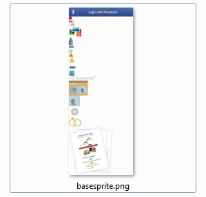
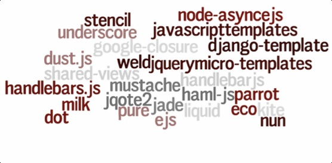
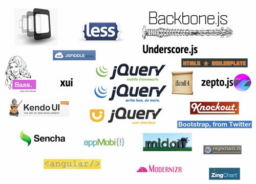

Front-end project assets
management
Inspired by Jakob Mattsson @jakobmattsson
SCALE OF MODERN FRONT-END APPS
- Client Web Applications are not as they used to be
- ...they are more complicated
- ...harder to develop, debug and maintain
- ...freaking huge and cumbersome when built
- ...and get out of control easiliy
Web apps - not kitten homepages
But first some quizzing...
"It's a piece of the stack that's been notably missing for years and after using it for a while now, I'm not sure how I lived without it."
What is this referring to?
> apt-get install foobar
Discovering UNIX
> port install foobar

Mac could do it as well
> gem install foobar
Ruby and its gems
App Store

Along came the iPhone
> npm install foobar
Node package manager
"It's a piece of the stack that's been notably missing for years and after using it for a while now, I'm not sure how I lived without it."
What was the next?
NuGet is a free and open source package manager for the .NET Framework
Even Microsoft is catching on!
What is the JS approach?

1. Find a library you want to use
2. Download the source
3. Put it alongside your own code

4. Let the global pollution begin
Tons of libraries in repositories
A maintenance nightmare
Web devs as seen by system devs
JavaScript is popular!
The medieval ages are over
There are solutions
NPM
Package manager.
Installs, publishes and manages node programs.
There are a lot of packages for browser
> npm install jquery
> npm install backbone
NPM is an index
{
"name": "backbone",
"description": "Give your JS App some Backbone.",
"url": "http://backbonejs.org",
"keywords": ["util", "server", "browser"],
"author": "Jeremy Ashkenas",
"dependencies": {
"underscore": ">=1.3.1"
},
"main": "backbone.js",
"version": "0.9.2"
}Use Package.json
Jam
A package manager for JavaScript.
”Unlike other repositories, we put the browser first.”
> jam install jquery
JAM is an index
> jam publish
{
"name": "myproject",
"version": "0.0.1",
"description": "An example Node.js project",
"dependencies": {
"async": "0.1.22" //NPM dependencies
},
"jam": {
"dependencies": {
"jquery": "1.7.1", //Jam dependencies
"underscore": null
}
}Use Package.json
Bower
A package manager for the web.
"A generic, unopinionated solution to the problem of front-end package management."
>bower install jquery
>bower install git://github.com/components/jquery.git
>bower install http://foo.com/jquery.awesome-plugin.js
>bower install ./repos/jquery
Bower is an index
{
"name": "my-project",
"version": "1.0.0",
"dependencies": {
"mocha": "1.8.1",
"angular-ui": "0.3.1",
"select2": "3.2.0",
"bootstrap": "2.1.1",
"jquery-ui": "1.9.2",
"jquery": "1.8.3"
}
}Use bower.json
CommonJS
CommonJS is a project with the goal of specifying an ecosystem for JavaScript outside the browser
main.js
var foo = require('./foo.js');
console.log(foo.square(4));
var bar = require('./bar.js');
console.log(bar.version);
console.log(bar.cube(4));We can load other files
foo.js
exports.square = function(x) {
return x * x;
};
console.log('loaded foo');A module can have side-effects
bar.js
exports.version = '0.1.0';
exports.cube = function(x) {
return x * x * x;
};
console.log('loaded bar');Modules can export multiple values
main.js
var coin = Math.random() > 0.5;
var name = coin ? 'foo' : 'bar';
var mod = require('./' + name + '.js');
console.log(mod.version);We can load dynamically
Browserify
Make node-style require() work in the browser with a server-side build step, as if by magic!
Step 1:
> browserify main.js -o bundle.js
Step 2:
CommonJS in the browser!
main.js
//use relative requires
var foo = require('./foo');
var bar = require('../lib/bar');
//or use modules installed by npm
var domready = require('domready');
domready(function() {
var elem = document.getElementById('result');
elem.textContent = foo(100) + bar('baz');
});Write files as if it was node.js
main.js
require.define("/main.js", function(
require,
module,
exports,
__dirname,
__filename,
process) {
// code from main.js
// ...
});Define your own module
RequireJS
A JavaScript module loader.
main.js
require(['helper/util'], function(util) {
//use util...
});Asynchronous Module Definition
util.js
define(['dep1', 'dep2'], function(dep1, dep2) {
return {
foo: function() {
//...
},
bar: 42
};
});Define Util
util.js
define(function(require) {
var dep1 = require('dep1');
var dep2 = require('dep2');
return {
foo: function() {
//...
},
bar: 42
};
});The CommonJS style
util.js
define(function(require) {
var dice = Math.random() > 0.5;
var name = dice ? 'foo' : 'bar';
var mod = require('./' + name + '.js'); //doh!!
console.log(mod.version);
return {};
});Non-static dependencies fails
Optimization:
RequireJS Optimizer (r.js)Build:
> node ../../r.js -o app.build.js
Production package
RequireJS
moreJam
A package manager for JavaScript.
”Unlike other repositories, we put the browser first.”
Step 1:
> jam install jquery
Step 2:
JAM is an index
Step 3:
require(['jquery'], function($) {
$(document.body).text('Hello, world!');
});Use it with RequireJS
Build:
> jam compile compiled.min.js
Keep packages up to date:
> jam upgrade
> jam publish
{
"name": "myproject",
"version": "0.0.1",
"description": "An example Node.js project",
"dependencies": {
"async": "0.1.22" //NPM dependencies
},
"jam": {
"dependencies": {
"jquery": "1.7.1", //Jam dependencies
"underscore": null
}
}Use Package.json

Sprites that are smart!
base.css
.error-icon {
background-image: url(../images/error-icon.png);
background-repeat: no-repeat;
...
}
.pdf-icon {
background-image: url(../images/pdf-icon.png);
background-repeat: no-repeat;
...
}.error-icon {
background-image: url(../images/basesprite.png);
background-position: left -48px;
background-repeat: no-repeat;
...
}
.pdf-icon {
background-image: url(../images/basesprite.png);
background-position: left -65px;
background-repeat: no-repeat;
...
}Can we do it smart?
Prepare css file
/** sprite: basesprite;
sprite-image: url('../images/sprites/basesprite.png');
sprite-layout: vertical */
.error-icon {
background-image: url(../images/error-icon.png); /** sprite-ref: basesprite; */
background-repeat: no-repeat;
...
}
.pdf-icon {
background-image: url(../images/pdf-icon.png); /** sprite-ref: basesprite; */
background-repeat: no-repeat;
...
}Run smartsprites
> smartsprites --root-dir-path resources/css
base-sprite.css
.error-icon {
background-image: url(../images/basesprite.png);
background-position: left -48px;
background-repeat: no-repeat;
...
}
.pdf-icon {
background-image: url(../images/basesprite.png);
background-position: left -65px;
background-repeat: no-repeat;
...
}

Templating engines are like weed
